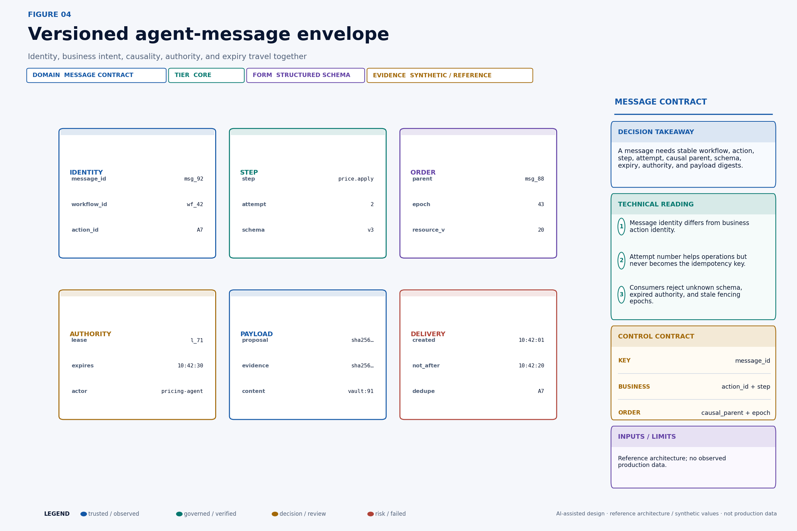
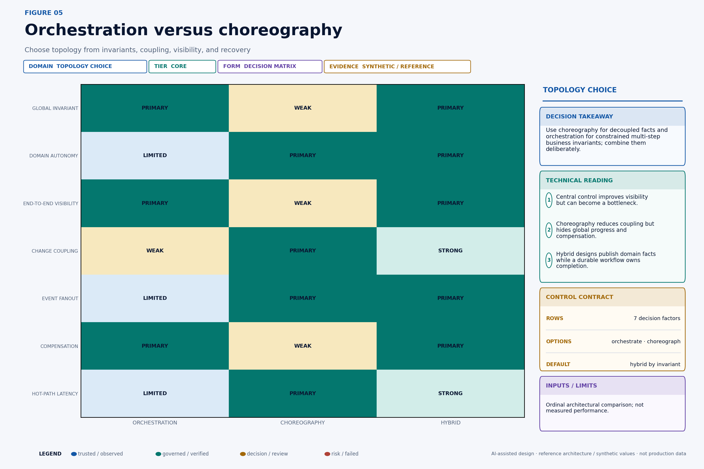
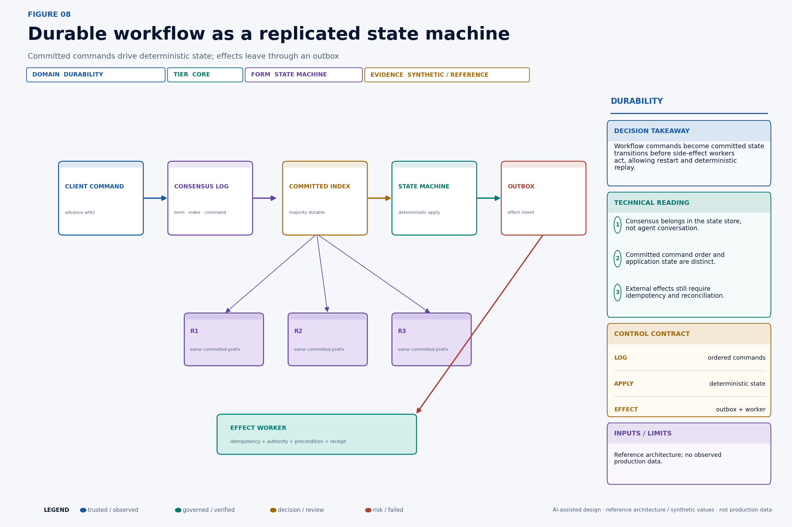
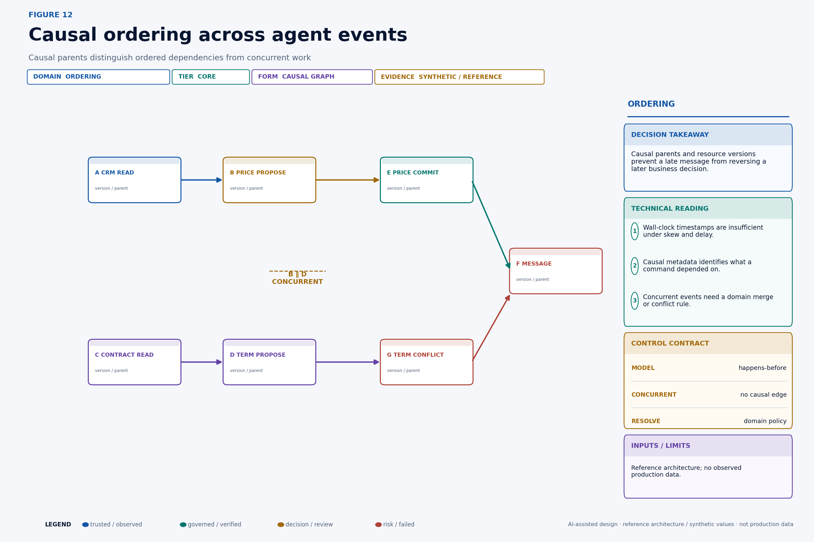
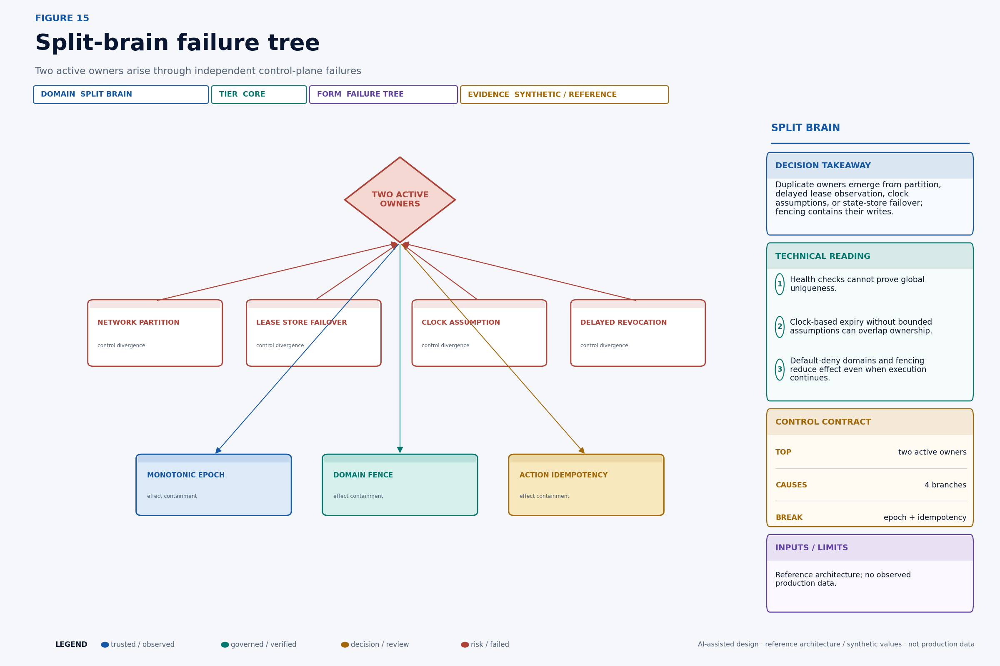
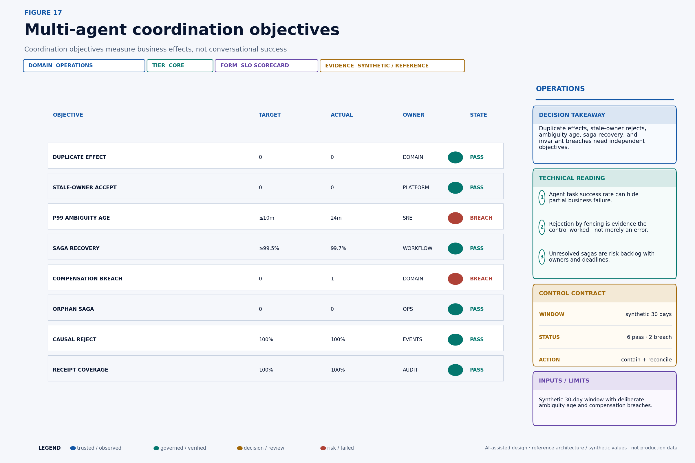
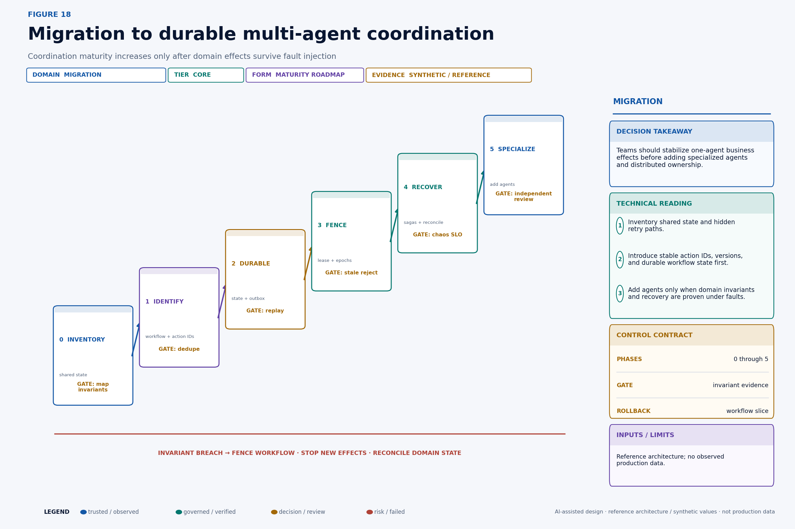

A revenue-operations company deploys six AI agents to renew a strategic account: sales gathers context, pricing selects a discount, contract edits terms, billing changes the schedule, fulfillment reserves capacity, and communications sends the customer update. Pricing and contract both read account version 20. Pricing commits an 8% discount and advances the record to version 21. Contract, unaware of that change, submits a mutually incompatible term against version 20. Meanwhile billing commits, its response times out, the workflow retries, and a second worker takes over after a lease expires. Every model produced fluent output. The business now has two workers, two candidate truths, an ambiguous charge, and a customer message that may describe a state that never existed.
This story was written with AI writing and visualization assistance. The company, workflows, account values, traffic, service levels, failure rates, test results, and economics are synthetic; the diagrams are reference architectures rather than observations about a deployed multi-agent system. Source-backed distributed-systems mechanisms are distinguished from illustrative design choices, and production parameters require measurement and validation in the target environment.
The difficult part of a multi-agent system is not making agents talk. It is preserving business truth while messages are delayed, duplicated, reordered, or lost; workers crash after an external commit; owners overlap; records change concurrently; permissions expire; and compensations fail. Once independent processes can observe and mutate shared business state, the system has entered distributed-systems territory whether the components are called agents, services, copilots, or workflows.
The production question is therefore not, “Can the agents collaborate?” It is:
Can every externally visible effect be attributed to one durable workflow, accepted under current authority and resource state, applied at most once as a business effect, verified against its postcondition, and recovered without leaving an ownerless obligation?

Technical summary#
A production multi-agent platform should treat the language model as a proposal engine inside a distributed control system. One durable workflow owns the lifecycle of the business intent. Every message carries stable workflow and action identities, causal parents, resource versions, an ownership epoch, bounded authority, expiry, and content digests. Domain systems enforce conditional writes, idempotency, and fencing; the orchestrator cannot merely claim those properties. External effects travel through a transactional outbox or an equivalent durable handoff. Ambiguous results enter reconciliation, not blind retry. Long-lived cross-domain work is modeled as a saga with explicit compensations and human-remediation states.
The core safety invariants are concrete and testable:
• No domain accepts a write from an ownership epoch older than the highest epoch it has observed for the governed scope.
• One stable action identity creates no more than one semantic business effect, even if transport delivers the request many times.
• A mutation commits only if its resource-version precondition and policy-bound authority still hold.
• Every terminal “succeeded” state resolves to a domain receipt and a verified postcondition.
• Every nonterminal workflow has a current owner, a future retry, a reconciliation task, a compensation plan, or a human escalation.
• Customer-visible facts are derived from verified domain state, not from the last message an agent generated.
These are stronger than “the agent completed its task.” A model can complete a task while the write is rejected. An API can return an error after committing. A queue can deliver twice. A lease holder can remain alive after losing ownership. The control plane must reason about business effects independently from conversational success.
This design does not require teams to implement a consensus algorithm inside prompts. It requires them to use proven durable infrastructure for workflow state and to expose the resulting monotonic terms, versions, idempotency keys, and receipts at business-effect boundaries. The Raft paper is useful here because it explains how replicated logs, terms, leader election, and deterministic state machines produce coherent state despite crash faults. It is a conceptual foundation for the workflow store, not a suggestion that application agents should reimplement Raft.
Scope and precise definitions#
The reference scenario is a renewal workflow that spans CRM, configure-price-quote, contract, billing, fulfillment, and messaging domains. Each domain remains authoritative for its own records and policies. The workflow service owns progression, not the underlying business truth. Agents may propose steps and interpret evidence, but they do not acquire unbounded permission to rewrite a shared memory blob.
An agent is an independently scheduled component that can interpret context and propose or invoke typed actions. A workflow is the durable state machine for one business intent. A step is a retryable unit of workflow progress. An action is a stable semantic mutation request such as “apply approved discount proposal P7 to account A42.” An attempt is one transport execution of that action. An effect is the authoritative state transition accepted by a domain. A receipt binds the action, input digest, authority, precondition, domain result, resource version, and verification evidence.
A lease grants temporary ownership of a coordination scope. An epoch, or fencing token, is a monotonically increasing number assigned when ownership changes. A saga is a long-lived sequence of local transactions with explicit recovery actions; it does not provide global atomicity. A compensation is a domain action intended to semantically offset an earlier effect. It may be imperfect or impossible. A reconciliation resolves an ambiguous outcome by reading authoritative state and evidence before deciding whether to retry, compensate, accept, or escalate.
The consistency model is deliberately scoped. The architecture does not promise one globally serializable transaction across every SaaS and internal system. It promises explicit local preconditions, durable workflow state, causal evidence, duplicate containment, stale-owner rejection where domains support it, and governed recovery where they do not.

The architecture separates three responsibilities. Specialist agents interpret domain evidence and form proposals. The durable workflow records ownership, step state, causal lineage, outbox entries, receipts, and recovery obligations. Domain services enforce business invariants, versions, idempotency, and authority independently. This separation prevents an orchestration defect from becoming an automatic permission to corrupt every downstream system.
Invariants are the real multi-agent interface#
Agent prompts describe desired behavior. Invariants describe states the system must never accept or must eventually resolve. Start architecture work by writing invariants in business language, then locate the component that can enforce each one.

For the renewal scenario, “one owner” is not a statement that only one process is running. Networks can partition and schedulers can pause. The enforceable form is: for a protected scope, the domain accepts writes only from the highest valid epoch it has observed. “Exactly once” is similarly misleading if interpreted as a transport guarantee. The useful invariant is: one action identity produces no more than one semantic effect in the authoritative domain.
Write each invariant with five fields:
invariant_id: renewal.discount.single_effect.v1
scope: tenant/{tenant_id}/account/{account_id}/renewal/{renewal_id}
statement: accepted_discount_effects(action_id) <= 1
enforcer: pricing-domain
oracle: pricing-effect-ledger
recovery_owner: revenue-operationsThe enforcer must sit where the state transition can be accepted or rejected. The oracle must distinguish “request observed” from “effect committed.” The recovery owner is a person or service accountable when the invariant cannot be automatically restored. If a team cannot name these fields, it does not yet have a production invariant; it has an aspiration.
Some invariants are safety properties: something bad never happens, such as accepting a stale owner. Others are liveness obligations: something good eventually happens, such as every ambiguous charge reaching verified, compensated, or escalated state. Liveness needs deadlines and ownership. “Eventually” without an age objective is an orphan queue.
Put coordination semantics inside the message#
Natural-language messages are insufficient protocol envelopes. “Please update the quote” does not identify the durable intent, expected record version, current owner, permission boundary, causal inputs, expiry, or duplicate key. Every inter-agent or agent-to-domain command needs a governed envelope that can be validated without asking a model what it meant.

A concrete envelope might look like this:
{
"message_id": "msg_092",
"tenant_id": "tenant_7",
"workflow_id": "wf_renewal_42",
"action_id": "act_discount_007",
"step": "pricing.apply_discount",
"attempt": 2,
"schema_version": 3,
"parent_message_ids": ["msg_088", "msg_089"],
"ownership": {
"scope": "account/A42/renewal/R9",
"epoch": 43,
"lease_id": "lease_071",
"not_after": "2026-08-23T10:42:20Z"
},
"authority": {
"grant_id": "grant_551",
"actions": ["pricing.discount.apply"],
"resource": "account/A42",
"value_limit": 250000,
"expires_at": "2026-08-23T10:42:30Z"
},
"preconditions": {
"resource_version": 20,
"policy_version": "pricing-policy/19"
},
"proposal_sha256": "c8b5…",
"evidence_manifest_sha256": "785f…",
"created_at": "2026-08-23T10:42:01Z",
"not_after": "2026-08-23T10:42:20Z"
}Stable identifiers have separate jobs. message_id distinguishes transport events. workflow_id groups the end-to-end intent. action_id remains constant across retries and is the semantic deduplication key. attempt increases for observability but must not create a new effect identity. The proposal digest prevents a retry from silently changing the requested mutation. The evidence digest binds the decision to the sources that justified it. The resource version protects against lost updates. The epoch protects against stale owners. Expiry prevents delayed delivery from exercising old authority.
Do not put secrets or entire sensitive documents in the envelope. Put immutable references and digests there, then resolve content through least-privilege access. Receivers should reject unknown schema versions, missing required parents, expired messages, mismatched digests, stale epochs, invalid grants, and failed preconditions with machine-readable reasons.
Choose orchestration, choreography, or a governed hybrid#
“Multi-agent” does not imply peer-to-peer choreography. Topology should follow the invariants, coupling, observability, latency, and recovery model.

Central orchestration works well when one end-to-end invariant, strict sequence, bounded concurrency, or visible recovery plan dominates. It concentrates workflow state and makes stuck progress easier to find. Its failure modes are control-plane concentration, coupling, and the temptation to absorb domain policy into one giant coordinator.
Choreography works well when domains own independent reactions to durable events, fan-out is expected, and no participant can know the entire process. Its failure modes are invisible coupling, event-version drift, accidental cycles, difficult end-to-end recovery, and multiple consumers interpreting one event differently.
The practical enterprise pattern is often hybrid: a durable orchestrator owns the customer or financial commitment, while domains publish facts and run local automation behind their boundaries. The orchestrator requests “reserve quote under proposal P7.” Pricing decides whether that action is valid and emits quote.reserved. Analytics, notification, and audit consumers may react choreographically. A global renewal status changes only through the durable workflow.
Avoid two extremes. A “god orchestrator” that bypasses domain rules becomes a privileged monolith. Pure peer choreography that relies on each agent remembering the whole story creates distributed responsibility without distributed control. Ownership of progression and ownership of business truth should be explicit and different.
A lease is temporary ownership, not proof of exclusivity#
Suppose worker A owns workflow scope account/A42/renewal/R9 under epoch 42. A network partition prevents renewal of the lease, but A remains alive. After expiry, worker B acquires epoch 43. Both can now execute application code. If domain APIs accept whichever request arrives first, the lease did not prevent split brain; it only informed the control plane that ownership changed.

Lease records should include scope, holder, acquired time, renewal time, duration, and monotonically increasing epoch. Kubernetes Lease objects demonstrate production uses of lease-shaped coordination, including node heartbeats and leader election. That documentation is evidence that leases are a practical coordination primitive; it does not make a Kubernetes Lease alone sufficient for business-effect fencing.
A safe renewal rule uses the authoritative lease store's compare-and-swap or transactional mechanism:
renew(holder, lease_id, epoch, now):
require current.holder == holder
require current.lease_id == lease_id
require current.epoch == epoch
require now < current.expires_at
set current.expires_at = now + durationClock assumptions must be declared. Use the lease store's time when possible. If clients calculate expiry, bound clock skew and network delay or shorten the useful work window before formal expiry. A worker that cannot confirm ownership should stop initiating new effects and move pending work to an uncertain state. “I did not see a revocation” is not current ownership.
Lease duration creates a trade-off. A short duration reduces stale-owner time but increases renewal load and false takeover during pauses. A long duration improves tolerance for jitter but expands the period before failover. Measure scheduler pauses, store latency, network delay, work duration, and renewal failure. Then select duration and safety margins per action class rather than one platform-wide constant.
Fencing makes ownership enforceable#
Fencing closes the lease gap by putting the ownership epoch on each protected mutation and making the resource domain reject old epochs. The critical control is not “worker A knows it is stale.” It is “pricing refuses worker A even if A still believes it is current.”

The domain-side check can be expressed as:
apply(command):
begin transaction
scope = lock_scope(command.ownership.scope)
if command.ownership.epoch < scope.max_epoch:
return STALE_OWNER
if command.authority is expired or out_of_scope:
return AUTHORITY_REJECTED
prior = idempotency_ledger.get(command.action_id)
if prior exists:
return prior.result
if resource.version != command.preconditions.resource_version:
return VERSION_CONFLICT
scope.max_epoch = max(scope.max_epoch, command.ownership.epoch)
result = mutate_resource(command)
idempotency_ledger.insert(command.action_id, command.digest, result)
commit
return resultThe epoch, resource mutation, and idempotency record must share a sufficiently strong transaction boundary. Otherwise a crash can advance the fence without recording the effect, or commit the effect without recording deduplication. When a SaaS API cannot store epochs, introduce the strongest available guard: conditional versions, scoped idempotency keys, a gateway that serializes the resource, or a reconciliation barrier. Then document the residual split-brain exposure instead of claiming fencing.
Epochs are scope-specific. A single global epoch would serialize unrelated customers and create a huge blast radius. Choose the narrowest scope that contains the invariant: workflow, account, quote, order, or ledger partition. A pricing write and a fulfillment reservation may use different domain fences even when one workflow owns both.
Durable workflow state is a replicated-state problem#
Workflow progress cannot live only in an agent's context window. A crash, deployment, model route change, or context truncation would erase the authoritative plan. Store workflow state in a durable system that offers explicit consistency and recovery guarantees.

The Raft paper describes replicated state machines as servers executing the same ordered commands from consistent logs, and it separates leader election, log replication, and safety. Application teams should normally rely on a mature database, durable workflow engine, or replicated log that already implements equivalent infrastructure guarantees. Prompts should never vote on who is leader, infer a committed index, or resolve conflicting workflow histories.
The application-level state machine still needs design. A renewal could move through:
DRAFT
-> EVIDENCE_READY
-> PRICE_PROPOSED
-> PRICE_APPROVED
-> PRICE_APPLY_PENDING
-> PRICE_APPLIED
-> CONTRACT_PENDING
-> ...
Any effecting state may also enter:
AMBIGUOUS -> RECONCILING -> VERIFIED | RETRYABLE | COMPENSATING | ESCALATEDTransitions must be deterministic with respect to recorded inputs. Model calls can be nondeterministic, so persist their proposal, route, parameters, evidence digest, and output before a transition depends on them. Do not replay a model call and assume it reconstructs the same command.
Use a transactional outbox when the workflow database commits state that should cause an external effect. In the same transaction, update the workflow and append an outbox record. A worker later delivers that record using the stable action_id. This prevents the classic gap in which workflow state commits but the request is never sent. It does not make the external effect atomic with the local transaction; idempotency and reconciliation remain necessary.
Transport semantics do not guarantee business semantics#
At-most-once delivery can lose a request. At-least-once delivery can duplicate it. Ordered partitions provide local order only within a declared key. A transactional outbox closes one local commit gap but does not create a transaction across the remote domain. “Exactly once” claims are often scoped to a broker or processor and do not prove exactly one customer charge, CRM transition, or email.

The application must decide its semantic objective per action:
• A diagnostic notification may tolerate at-most-once delivery because missing one low-value event is acceptable.
• A quote reservation generally needs at-least-once attempt with one semantic reservation per action identity.
• A ledger entry needs domain-native idempotency and an authoritative transaction identifier.
• A customer message needs duplicate suppression, but its content also needs a verified-state precondition so a unique message is not uniquely wrong.
HTTP itself distinguishes safe and idempotent method semantics. RFC 9110 defines idempotent methods by the intended effect of multiple identical requests, while also noting clients may retry an idempotent request after a communication failure. A POST endpoint does not become semantically idempotent because a client sets a retry header. The resource service must bind a stable key to the same normalized intent and return the prior result on duplicate attempts.
Timeouts are epistemic events. They say the caller did not receive a conclusive response within a window. They do not say the server did nothing. The only safe next state is often AMBIGUOUS, followed by a status lookup, receipt query, or domain reconciliation. Blind retry is correct only when the effect boundary is idempotent for the stable action identity.
Reconciliation should be a first-class state machine rather than an error-handler loop. First query the remote system by domain effect ID, idempotency key, or immutable business reference. If the effect exists and its digest and postcondition match, record the receipt and advance to verified. If authoritative evidence proves no effect occurred and the command remains valid, move to retryable under a fresh attempt but the same action identity. If the effect exists with a different digest or incompatible resource state, contain downstream work and escalate a conflict. If the remote system cannot answer conclusively, schedule another bounded observation and increase ambiguity age; do not create a new semantic action to make the dashboard green.
The reconciliation budget belongs to the action class. A customer-visible price change may allow minutes, a low-risk enrichment hours, and an accounting close perhaps no unresolved ambiguity at the cutoff. Define the observation interval, maximum attempts, authoritative queries, terminal deadline, and human owner before deployment. This converts uncertainty from an unbounded technical exception into a priced operational obligation.
Build an idempotency ledger, not a cache#
An idempotency cache that expires after a few minutes may improve UX but is weak protection for business workflows that retry hours later or replay after disaster recovery. The ledger must preserve enough information for the domain's duplication horizon and audit obligations.

A relational design could begin with:
CREATE TABLE action_effect_ledger (
tenant_id text NOT NULL,
domain_scope text NOT NULL,
action_id text NOT NULL,
proposal_sha256 text NOT NULL,
workflow_id text NOT NULL,
ownership_epoch bigint NOT NULL,
resource_version_in bigint,
state text NOT NULL,
attempt_count integer NOT NULL DEFAULT 0,
domain_effect_id text,
resource_version_out bigint,
response_json jsonb,
receipt_sha256 text,
created_at timestamptz NOT NULL,
updated_at timestamptz NOT NULL,
PRIMARY KEY (tenant_id, domain_scope, action_id)
);On duplicate lookup, compare the stored proposal digest with the incoming digest. Same key and different intent is a conflict, not a replay. Store a normalized result or stable reference so the caller receives the original outcome. If execution begins but the process loses the remote response, keep AMBIGUOUS; do not overwrite it with a new attempt's assumption.
Retention should follow the maximum period in which a duplicate could reappear or the effect must be proven, including queue retention, backup restoration, offline clients, reconciliation, and contractual audit windows. Tombstones may be enough after sensitive result data expires, but deleting every trace reopens the key for duplicate execution. Privacy and retention requirements need a designed compromise: minimize stored payload, retain digests and non-sensitive identifiers, encrypt sensitive fields, and separate evidence access from the dedupe key.
Concurrent agents create lost-update races#
The pricing and contract agents are each individually authorized. That does not make their concurrent writes jointly valid. Both can read account version 20, form locally coherent proposals, and race. Without conditional writes, the later request may overwrite the earlier effect or combine fields that were never evaluated together.

Use optimistic concurrency when conflicts are uncommon and re-evaluation is cheap. The command carries If-Match: version-20 or a domain equivalent. The first write commits version 21. The second receives a conflict, re-reads version 21, reconstructs evidence, and asks whether its proposal is still valid. It must not simply replace the precondition and retry unchanged.
Use pessimistic serialization when the cost of conflicting work or external side effects is high, the critical section is short, and the domain can enforce a lock safely. Even then, locks need leases, epochs, and failure recovery. A lock held only in agent memory is not a lock.
Field-level merging is valid only when the domain defines independent fields and cross-field constraints. A CRDT can resolve some convergent data types, but a renewal's discount, term, billing schedule, and customer commitment have semantic constraints that a generic last-write-wins merge cannot preserve. Domain policy must decide whether proposals commute, require recomputation, or conflict.
The business implication is important: adding specialist agents increases the number of plausible concurrent proposals. Specialization can improve local reasoning while reducing global consistency unless the platform prices and controls coordination. “More agents” is not free parallelism.
Causal order is narrower than global order#
Not every event needs one total global sequence. It does need enough causality to prevent dependent work from observing impossible histories. If a customer message depends on a committed price and signed term, its parents should identify those facts. Two proposals with no causal path may be concurrent and require a domain merge or conflict rule.

For events a and b, define a → b when a causally precedes b: the same process emitted a before b, b was produced after consuming a, or transitivity connects them. If neither a → b nor b → a, they are concurrent, written a ∥ b. Physical timestamps can help operations but cannot prove causality under skew and delayed delivery.
The platform can record direct parent IDs plus domain versions. Vector clocks offer richer causality but may be expensive when participants are dynamic. A workflow sequence plus per-domain versions is often sufficient for bounded enterprise processes. The right structure depends on the merge question, not academic elegance.
Consumer logic should declare required predecessors. A message-generation step could require pricing_effect.version = 21, contract_effect.status = SIGNED, and workflow.customer_commitment_state = VERIFIED. If one parent is missing or superseded, the event waits, expires, or triggers reconciliation. It does not ask a model whether the timeline “looks consistent.”
Event-time analytics must also handle reordering. Operational dashboards should distinguish created time, committed time, observed time, and reconciled time. Otherwise a late event can make recovery appear to precede failure or inflate apparent step latency.
Cross-domain work is a saga, not a giant transaction#
A renewal can reserve a quote, apply price, sign a term, adjust billing, reserve fulfillment, and notify the customer. Those systems rarely share one atomic database transaction. Treat the process as a saga: a durable sequence of local transactions, each with a recovery action or explicit irreversibility.

The original Sagas paper by Garcia-Molina and Salem describes long-lived transactions as sequences of transactions that can be interleaved, with compensating transactions used when the overall activity must be rolled back. Modern agent platforms inherit the same problem: local commits survive even when later work fails.
Represent the saga explicitly:
{
"saga_id": "renewal/R9",
"state": "COMPENSATING",
"failed_step": "billing.adjust",
"forward": [
{"step": "quote.reserve", "receipt": "rcpt_q1", "state": "COMMITTED"},
{"step": "price.apply", "receipt": "rcpt_p1", "state": "COMMITTED"},
{"step": "term.sign", "receipt": "rcpt_t1", "state": "COMMITTED"}
],
"recovery_plan_version": "renewal-compensation/8",
"obligations": [
{"action": "term.release", "depends_on": [], "state": "READY"},
{"action": "price.revert", "depends_on": ["billing.cancel"], "state": "WAITING"}
]
}Every forward step and compensation has its own stable action identity, authority, precondition, idempotency record, receipt, and verification. The workflow should never mark the saga recovered merely because compensation requests were sent. It verifies postconditions in every affected domain.
Compensation is semantic, not time travel. Releasing a reservation may restore capacity exactly. Reverting a price after an invoice may require a credit note rather than deleting history. A customer message cannot be unsent; recovery may send a correction and create a service task. A signed legal commitment may require counsel and counterparty action. Model the honest terminal states: RECOVERED, RECOVERED_WITH_RESIDUAL, ACCEPTED_EXCEPTION, and HUMAN_REMEDIATION_REQUIRED.
Recovery follows dependencies and customer impact#
Blindly running compensations in reverse completion order is unsafe when recovery actions depend on one another or when external commitments have different consequences. Construct a compensation dependency graph when the saga begins or when its plan version is selected.

Nodes are compensation or verification actions. Directed edges mean one must complete before another can safely run. The scheduler may parallelize independent nodes, but it must preserve each dependency and domain concurrency guard. Prioritize irreversible or accumulating harm: stop repeated billing before repairing internal metadata; prevent a misleading message before optimizing queue throughput.
A recovery scheduler can rank ready nodes with a transparent function:
priority(c) = w1 × ongoing_loss_rate(c)
+ w2 × customer_visibility(c)
+ w3 × propagation(c)
+ w4 × deadline_pressure(c)
- w5 × recovery_uncertainty(c)That score determines order among policy-eligible nodes; it does not override mandatory dependencies or approval rules. High uncertainty may route to a human rather than merely lower priority. Record the score inputs and policy version so operators can understand why one recovery ran first.
Compensation failure is itself a durable business event. It should open an intervention task with affected resources, attempted actions, receipts, unresolved invariants, estimated exposure, deadline, and accountable owner. Do not leave failure only in an exception log owned by the platform team.
Split brain is an effect problem#
Two active workers can arise through network partition, lease-store failover, scheduler suspension, long garbage collection, delayed revocation, or incorrect clock assumptions. A health check can prove one worker responds; it cannot prove no other worker is acting elsewhere.

The containment strategy is layered:
• The ownership store issues monotonically increasing epochs through a strongly consistent update.
• Workers stop starting new work when they cannot renew within a safety margin.
• Messages carry the epoch and expire quickly enough for the action class.
• Domain services store the highest accepted epoch for the protected scope and reject older writes.
• Stable action identities prevent duplicate effects even when two current-looking attempts arrive.
• Resource versions reject proposals built against stale business state.
• Reconciliation searches for ambiguous effects and unresolved sagas after failover.
Default-deny behavior matters. If a protected domain cannot verify the epoch or authority service, it should reject high-risk writes or route them through an explicitly designed degraded mode. “Fail open so the agent keeps working” silently converts a control-plane outage into unauthorized business activity.
Not every action needs the same availability choice. A low-risk enrichment may proceed in a partition under bounded local rules. A material price change may wait. A safety containment action may use a pre-authorized emergency path with narrower scope, shorter duration, and mandatory after-action review. Availability is a business policy encoded at the action boundary.
Chaos tests must assert business invariants#
Unit tests that mock successful APIs do not exercise the failure modes that dominate multi-agent coordination. Inject faults at message transport, worker runtime, workflow store, lease renewal, domain response, and compensation execution. Continue the test through recovery.

Each test case needs an injection point, timing, affected scope, authoritative oracle, expected transient states, maximum ambiguity age, expected terminal state, and cleanup proof. For example:
scenario: pricing_commits_then_response_drops
inject:
point: pricing-api.after-commit.before-response
probability: 1.0
command:
action_id: act_discount_007
expected:
attempts: ">= 2"
accepted_effects: 1
terminal_state: VERIFIED
resource_version_out: 21
duplicate_customer_messages: 0
ambiguity_age: "<= 10m"
oracle:
- pricing-effect-ledger
- workflow-receipt-ledger
- messaging-domainFigure 16 intentionally includes breach cells; it is a reference test-design matrix, not a green certification. A clock-skew scenario breaches one-owner assumptions when expiry depends on unbounded client clocks. A compensation failure breaches recovery and no-orphan assertions if no intervention task is created. A domain timeout breaches receipt and recovery until reconciliation resolves it.
Run deterministic fault cases on every control change and stochastic campaigns against a production-like environment. Vary delay, duplication, reordering, worker pause duration, lease duration, clock skew, dependency failure, and failover timing. Seed synthetic runs and preserve the seed, configuration, event trace, domain snapshots, and oracle results. Test the absence of duplicate effects, not just the presence of expected output.
Operate business-effect SLOs#
Model quality, task completion, and API availability are useful but insufficient. Operations needs objectives that describe the integrity and recovery of business effects.

Define a denominator and oracle for every metric:
duplicate_effect_rate
= action_ids_with_more_than_one_accepted_effect
/ action_ids_with_any_accepted_effect
stale_owner_accept_rate
= accepted_effects_with_epoch_below_domain_max
/ protected_effect_attempts
ambiguity_age_p99
= p99(resolved_at - ambiguity_started_at)
orphan_saga_count
= sagas_without_terminal_state
and without_owner
and without_scheduled_transitionTargets depend on action class. Duplicate financial effects and stale-owner acceptance may have a zero tolerance with immediate containment. Low-risk enrichment may use a small error budget. Ambiguity age should be shorter than the point at which unresolved state creates customer or financial harm. Saga-recovery targets should state both recovery rate and deadline.
Interpret errors correctly. A spike in STALE_OWNER rejections can mean the fencing control worked during instability. It is still an operational signal about lease churn or paused workers, but it is not equivalent to an accepted stale effect. Separate prevented attempts from realized invariant breaches.
Create a reconciliation control room for unresolved effects. Operators should see the workflow, action, scope, last confirmed state, domains touched, receipts present, ambiguity age, potential exposure, next scheduled action, and human owner. Pages should link to safe recovery operations, not encourage ad hoc database edits.
Price coordination as a business cost#
Multi-agent architecture changes the economics of automation. Decomposing one workflow across more agents may improve expertise, modularity, and independent checks. It also adds messages, model calls, durable transitions, potential races, recovery branches, and operational burden.
An illustrative expected cost per completed workflow is:
C_total = C_model
+ C_tool
+ C_coordination
+ C_review
+ C_delay
+ E[C_recovery]
+ E[L_residual]
E[C_recovery] = Σ_f P(f) × C_recover(f)
E[L_residual] = Σ_h P(h | controls) × Loss(h)C_coordination includes state transitions, messages, storage, idempotency lookups, version conflicts, and observability. C_delay includes customer and operational value lost while steps serialize or reconcile. E[C_recovery] prices common fault paths. E[L_residual] prices harm that controls do not prevent or fully reverse.
The correct comparator is not token cost alone. Compare a one-agent controlled workflow, a multi-agent controlled workflow, and the human or legacy process across decision quality, cycle time, throughput, loss tail, auditability, recovery workload, and change cost. A multi-agent design is justified when specialization or independent checking creates measurable value greater than coordination and residual-risk cost.
A useful marginal decision is:
add specialist agent k only if
ΔQualityValue_k + ΔRiskReduction_k + ΔCapacityValue_k
> ΔInferenceCost_k + ΔLatencyCost_k
+ ΔCoordinationCost_k + ΔRecoveryCost_k
+ ΔResidualLoss_kThe terms need empirical estimates and sensitivity ranges. If the business case works only when retries never happen or recovery labor is valued at zero, it is not a production business case.
Define ownership across platform and domains#
The platform team should own the workflow runtime, envelope standard, lease and epoch service, schema registry, outbox library, trace correlation, replay controls, and coordination SLO framework. Domain teams should own business invariants, conditional mutation APIs, idempotency retention, receipt semantics, compensation actions, and authoritative oracles. Risk and security should own action classes, degraded-mode rules, authority constraints, and independent control testing. Operations should own reconciliation queues and recovery runbooks.
Product teams own the end-to-end journey and trade-offs. They decide which failures may wait, which require containment, which residuals need customer remediation, and whether added specialization is economically justified. An architecture committee can review patterns, but it cannot become the daily owner of every stuck saga.
Separation of duties may also apply among agents. An evidence-gathering agent can prepare sources while a policy agent evaluates admissibility and a deterministic service enforces the result. That separation is useful only when identities, inputs, and permissions are actually isolated. Three prompts sharing one credential and one mutable context are not three independent controls.
Change management needs protocol compatibility. Version envelopes and events. Support a bounded compatibility window. Replay historical traces against new transition logic. Roll out by workflow slice and action class. Keep old consumers until lag and dead-letter evidence show safe retirement. A prompt deployment can be reversible while an event-schema break is not.
Migrate before multiplying agents#
Do not begin by splitting the current agent into six personas. First make one workflow's effects durable, unique, conditional, authorized, and recoverable. Then add specialization behind the same control contract.

Phase 0 — inventory. Map every shared record, external side effect, credential, queue, callback, scheduler, manual correction, and retry path. Identify where timeouts can hide commits. Write the top business invariants and name domain oracles.
Phase 1 — stable identity. Assign workflow and action IDs. Separate action identity from attempt identity. Normalize proposal digests. Add domain idempotency for the highest-risk effects. Gate exit on deliberate duplicate-delivery tests.
Phase 2 — durable workflow. Move progression out of prompt memory. Persist transitions, model proposals, evidence digests, outbox records, receipts, ambiguity, and recovery obligations. Gate exit on crash-and-replay tests with no lost committed work.
Phase 3 — versions and fencing. Add resource preconditions, ownership leases, monotonic epochs, and domain rejection of stale owners. Gate exit on partition, pause, failover, and concurrent-write tests.
Phase 4 — recovery. Define sagas, compensation dependencies, reconciliation, intervention queues, and business-effect SLOs. Gate exit on end-to-end chaos tests that run through terminal recovery.
Phase 5 — specialize. Introduce additional agents where the economic and risk case is positive. Preserve the action contract. Compare one-agent and multi-agent cohorts on quality, cycle time, cost, conflicts, ambiguity, and recovery. Roll back the workflow slice—not just the latest prompt—if invariant evidence degrades.
The migration can be incremental. Start with one consequential action, such as discount application, rather than replacing the entire renewal process. The vertical slice should include proposal, authority, version guard, idempotency, receipt, verification, compensation, metrics, and runbook. A narrow complete control path teaches more than a broad orchestration demo.
Failure modes and limitations#
This blueprint does not eliminate distributed failure. It makes failure bounded, visible, and recoverable.
A strongly consistent workflow store can still be unavailable. Decide which actions wait, fail closed, or enter a constrained emergency path. Do not weaken every domain because the coordinator is down.
Fencing coverage can be incomplete. Some third-party APIs cannot validate epochs or stable idempotency keys. Wrap them where possible, serialize through a gateway, verify immediately, and keep the residual exposure explicit.
Idempotency can preserve the wrong effect. One uniquely applied command can still be based on bad evidence or invalid policy. Evidence provenance, approval, authority, preconditions, and postcondition verification remain separate controls.
Compensations can create additional harm. A refund, correction, or cancellation may have tax, contractual, customer, or operational consequences. Test compensation policy and require human remediation for irreversible commitments.
Causal metadata can be lost at integration boundaries. Legacy systems may emit events without workflow IDs or versions. Reconstructing lineage from timestamps is probabilistic. Mark confidence and avoid strong causal claims when evidence is incomplete.
Byzantine behavior is out of scope. The reference design primarily addresses crash faults, partitions, retries, stale workers, concurrency, and integration defects. A malicious domain, forged identity, compromised key, or colluding component needs stronger authentication, integrity, attestation, isolation, and incident response.
Synthetic figures are not reliability evidence. The matrices, values, and scorecards illustrate how to structure decisions. They do not establish achievable failure rates, safe lease durations, or economic returns. Production teams need measured traces, controlled fault injection, recovery exercises, and independent review.
Production-readiness questions#
Before a multi-agent workflow can mutate consequential systems, its owners should answer:
• What are the business invariants, and which domains enforce them?
• What is the stable workflow identity, action identity, and retry identity?
• Which resource version and causal parents justified each proposal?
• Who owns the workflow now, under what epoch, and which domains fence it?
• Can a duplicate request produce a second semantic effect?
• What does a timeout mean for each tool, and how is ambiguity reconciled?
• Which durable record survives a worker crash between local commit and external delivery?
• Which receipts prove that a claimed success became authoritative state?
• Which cross-domain sequence is a saga, and what are its compensations and irreversibilities?
• How are compensation dependencies ordered and verified?
• Which fault tests demonstrate one effect, current authority, preserved versions, and no orphan recovery?
• Which SLOs measure business integrity rather than conversational completion?
• Who owns each unresolved saga, and when does it escalate?
• What measurable value justifies every additional agent and coordination edge?
If the answers live only in prompts, diagrams, or the memory of one engineer, the system is not production-coordinated.
Further questions#
Several design questions require target-system evidence. How long can duplicate attempts reappear after queue replay, disaster recovery, or offline operation? Which domains can atomically bind fencing, idempotency, and mutation? What scheduler pauses and network delays define a safe lease margin? Which compensation steps are legally or operationally irreversible? Which action classes require stronger consistency than the platform currently offers? How quickly does ambiguity become customer harm? Which specialist agent adds measurable value after coordination cost is included?
These should become experiments, fault campaigns, and policy decisions with owners—not assumptions hidden in framework defaults.
The governing principle is simple:
Agent fluency can propose the next move. Only a distributed control system can prove which move owns the right state, authority, order, effect, and recovery obligation.